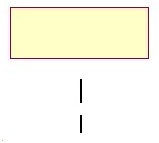
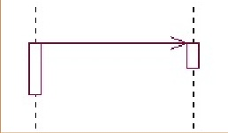
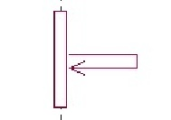

Diseño de Sistemas TI
Tec. Desarrollo de Software


Partes o Elementos de un diagrama de interacción (UML)
Se comone por 3 partes basicamente
1//Objeto/Actor:
El rectángulo representa una instancia de un Objeto en particular, y la línea punteada representa las llamadas a métodos del objeto.
2//Mensaje a Otro Objeto:
Se representa por una flecha entre un objeto y otro, representa la llamada de un método (operación) de un objeto en particular.
3//Mensaje al Mismo Objeto:
No solo llamadas a métodos de objetos externos pueden realizarse, también es posible visualizar llamadas a métodos desde el mismo objeto en estudio.